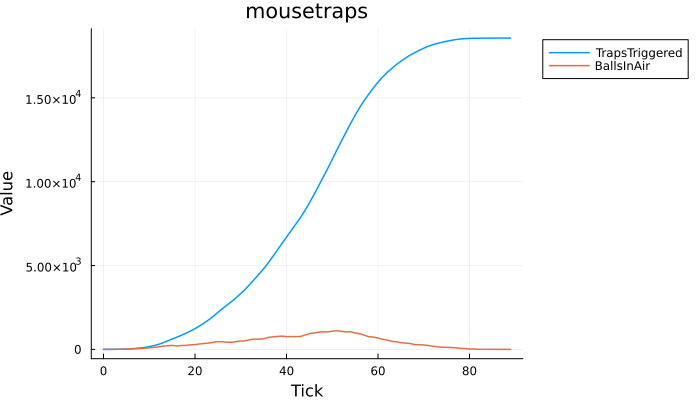
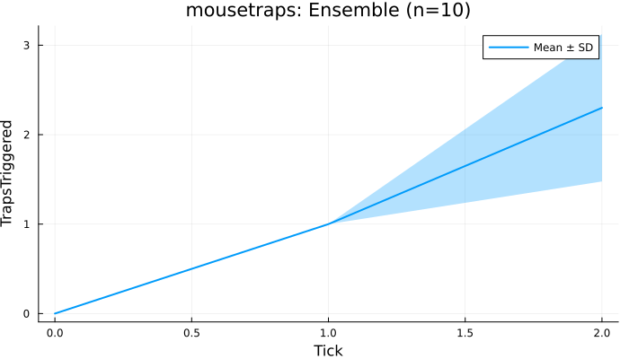
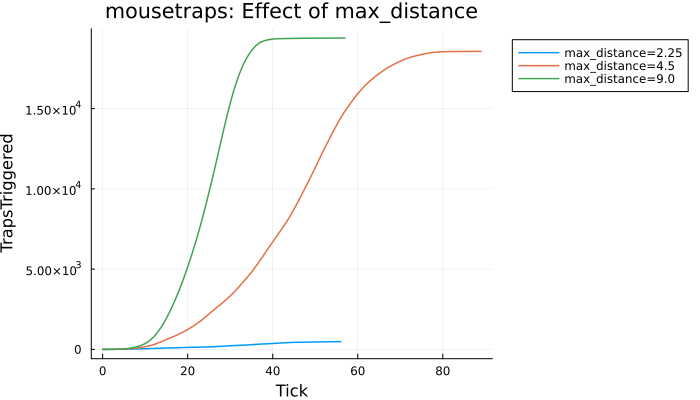

Mousetraps
Overview
WHAT IS IT?
Imagine a gymnasium full of mousetraps. On each mousetrap is a ping pong ball. Now throw a single ping pong ball into the middle of the room. The ball lands on a trap, the trap triggers, and a second ball flies into the air. The first ball also bounces into the air again, so now there are two balls in the air. Each of those two balls triggers another trap, so there’s four balls in the air. And so on…
This experiment is a well-known metaphor for nuclear fission. In nuclear fission, atoms of fissionable material such as uranium are the “mousetraps”, and neutrons are the ping pong balls.
HOW IT WORKS
Light blue squares represent untriggered mousetraps. Red squares represent triggered mousetraps.
When a ball lands on a light blue square, the square turns red, a new ball appears, and both balls travel a random distance in a random direction.
THINGS TO NOTICE
Sometimes the reaction fizzles out almost immediately. Why do you think that happens?
Even if a sustained chain reaction occurs, not every mousetrap gets triggered. Why?
What shape is the “Traps triggered” plot? Why do you think it’s shaped that way?
What shape is the “Balls in the air” plot? Why do you think it’s shaped that way?
Suppose the gymnasium was infinitely large. What would the two plots look like? What kind of equation would produce such plots?
THINGS TO TRY
Play around with varying the MAX-DISTANCE slider. How big does MAX-DISTANCE need to be in order to get a chain reaction every time? Most of the time?
EXTENDING THE MODEL
There are various ways in which this model could be more physically realistic. For example:
Currently both a released ball and a bouncing ball travel the same maximum distance, but in reality the mousetrap would likely send the released ball much farther. Change the model so these different distances are controlled by two different sliders.
Currently the balls travel to their new positions instantly — in reality it would take time proportional to the distance traveled. (Does it make a difference if you take into account that the balls move in a parabola through the air, not a straight line?) Change the model to take this into account.
NETLOGO FEATURES
Note the use of hatch to cause the ping pong balls to “multiply”.
When a turtle tries to move off the edge of the world it cannot, it hits the wall, and lands on the same mousetrap it triggered in the last step, it dies.
RELATED MODELS
Rumor Mill is very similar to this model in mechanism and results, even though the domain is completely different (people and rumors instead of mousetraps and ping pong balls). (What other processes in nature or society does this model resemble…?)
Reactor X-Section and Reactor Top Down are two different views of nuclear fission happening inside a nuclear reactor. They both include ways of limiting the rate of fission so the “mousetraps” don’t all start triggering uncontrollably.
CREDITS AND REFERENCES
This model is based on the “Mousetrap” demo included with the Swarm agent-based modeling toolkit (http://www.swarm.org). See https://web.archive.org/web/20020719084215/http://acoma.santafe.edu/projects/swarm/examples/mousetrap/. Note that this model and that demo differ in various details.
HOW TO CITE
If you mention this model or the NetLogo software in a publication, we ask that you include the citations below.
For the model itself:
- Wilensky, U. (2002). NetLogo Mousetraps model. http://ccl.northwestern.edu/netlogo/models/Mousetraps. Center for Connected Learning and Computer-Based Modeling, Northwestern University, Evanston, IL.
Please cite the NetLogo software as:
- Wilensky, U. (1999). NetLogo. http://ccl.northwestern.edu/netlogo/. Center for Connected Learning and Computer-Based Modeling, Northwestern University, Evanston, IL.
COPYRIGHT AND LICENSE
Copyright 2002 Uri Wilensky.

This model is licensed under the Creative Commons Attribution-NonCommercial-ShareAlike 3.0 License. To view a copy of this license, visit https://creativecommons.org/licenses/by-nc-sa/3.0/ or send a letter to Creative Commons, 559 Nathan Abbott Way, Stanford, California 94305, USA.
NetLogo itself is free software for non-commercial use under the terms of the GNU General Public License (see full license information here).
To inquire about commercial licenses for either NetLogo or specific models from the models library, please contact netlogo-commercial-admin@ccl.northwestern.edu.
This model was created as part of the projects: PARTICIPATORY SIMULATIONS: NETWORK-BASED DESIGN FOR SYSTEMS LEARNING IN CLASSROOMS and/or INTEGRATED SIMULATION AND MODELING ENVIRONMENT. The project gratefully acknowledges the support of the National Science Foundation (REPP & ROLE programs) – grant numbers REC #9814682 and REC-0126227.
Parameters
| Parameter | Type | Default | Description |
|---|---|---|---|
max_distance | Float64 | 4.5 | random-float max-distance |
half_width | Int | 80 | world from -80 to 80 → 161×161 patches |
max_ticks | Int | 150 | max ticks |
Source Code
The Julia code to run this model:
using ArkModelZoo
_, trajectory = run_mousetraps()Time Series

Ensemble Runs
Ten replicates with different random seeds, showing mean ± standard deviation.

Parameter Sensitivity
Varying max_distance.

Appendix: Source Code
This model is implemented in the Ark.jl Entity-Component-System (ECS) framework. The code is split into five files, each with a distinct role:
- Parameters: a mutable struct holding all configurable values.
- Components: lightweight data types attached to individual entities (agents).
- Resources: world-level shared state accessible to all systems.
- Systems: functions that operate on entities each tick, defining model behavior.
- Model: wiring that assembles the world, registers resources and systems, and provides the run entry point.
Parameters (parameters.jl)
The parameter struct uses @kwdef so that every field has a default value and can be overridden by keyword. These defaults match the original NetLogo model’s slider settings.
Base.@kwdef mutable struct MousetrapParams
max_distance::Float64 = 4.5 # random-float max-distance
half_width::Int = 80 # world from -80 to 80 → 161×161 patches
max_ticks::Int = 150
seed::Int = 42
endComponents (components.jl)
Components are lightweight data types attached to individual entities (agents). Mutable structs hold per-entity state, while empty tag structs act as markers for the ECS query system to efficiently filter entities.
# Continuous position of a ball on the grid
mutable struct BallPosition
x::Float64
y::Float64
end
BallPosition() = BallPosition(0.0, 0.0)Resources (resources.jl)
Resources are world-level singletons shared across all systems, used for global state and aggregate statistics.
# Grid tracking triggered patches (true = triggered/red)
mutable struct MousetrapGrid
half_width::Int
triggered::Matrix{Bool}
end
function MousetrapGrid(half_width::Int)
dim = 2 * half_width + 1
return MousetrapGrid(half_width, falses(dim, dim))
end
# Tracked globals: traps-triggered, balls-in-air
mutable struct MousetrapStats
traps_triggered::Int
balls_in_air::Int
end
MousetrapStats() = MousetrapStats(0, 0)Systems (systems.jl)
Systems contain the model logic and execute in a defined order each tick. Each system struct implements either initialize! (run once at setup) or update! (run every tick).
# Mousetraps chain-reaction model systems
# Execution order: init → process balls → count stats → terminate
# --- Helper: random movement matching NetLogo non-wrapping forward ---
# NetLogo's `fd d` takes incremental steps of at most 1 unit each.
# At each step, if the destination is outside the world (Box topology:
# x >= max_pxcor+0.5 or x < min_pxcor-0.5), that step is abandoned
# and the turtle keeps the position from the last successful step.
# See _fdinternal.scala and Box.scala in the NetLogo source.
function _mousetraps_move(x::Float64, y::Float64, rng, max_dist::Float64, half_w::Int)
θ = rand(rng) * 2π
d = rand(rng) * max_dist
dx = cos(θ)
dy = sin(θ)
bound = Float64(half_w) + 0.5
remaining = d
while remaining > 3.2e-15 # NetLogo Numbers.Infinitesimal
step = min(1.0, remaining)
new_x = x + dx * step
new_y = y + dy * step
if new_x >= bound || new_x < -bound || new_y >= bound || new_y < -bound
break
end
x = new_x
y = new_y
remaining -= step
end
return x, y
end
# --- Initialization ---
# NetLogo: crt 1 at center (0,0)
struct InitMousetrapSystem <: System end
function initialize!(::InitMousetrapSystem, world::World)
stats = get_resource(world, MousetrapStats)
new_entity!(world, (BallPosition(0.0, 0.0),))
stats.traps_triggered = 0
stats.balls_in_air = 1
return nothing
end
# --- Main system: process balls on patches ---
# NetLogo ask turtles: shuffled, sequential, grid updates visible within tick.
# Newly hatched turtles are NOT processed in the same tick.
struct MousetrapSystem <: System
order::Vector{Int}
to_spawn::Vector{Tuple{Float64,Float64}}
to_kill::Vector{Entity}
end
MousetrapSystem() = MousetrapSystem(Int[], Tuple{Float64,Float64}[], Entity[])
function update!(system::MousetrapSystem, world::World)
params = get_resource(world, MousetrapParams)
rng = get_resource(world, RNGResource).rng
grid = get_resource(world, MousetrapGrid)
stats = get_resource(world, MousetrapStats)
hw = params.half_width
dim = 2 * hw + 1
empty!(system.to_spawn)
empty!(system.to_kill)
# Collect all current balls into flat arrays
n = 0
for (eids, _) in Query(world, (BallPosition,))
n += length(eids)
end
n == 0 && return nothing
entities = Vector{Entity}(undef, n)
xs = Vector{Float64}(undef, n)
ys = Vector{Float64}(undef, n)
idx = 0
for (eids, positions) in Query(world, (BallPosition,))
@inbounds for i in eachindex(eids)
idx += 1
entities[idx] = eids[i]
xs[idx] = positions[i].x
ys[idx] = positions[i].y
end
end
# Shuffle processing order (Fisher-Yates)
resize!(system.order, n)
for i in 1:n
system.order[i] = i
end
for i in n:-1:2
j = rand(rng, 1:i)
system.order[i], system.order[j] = system.order[j], system.order[i]
end
# Process each ball sequentially; grid changes are visible immediately
new_xs = Vector{Float64}(undef, n)
new_ys = Vector{Float64}(undef, n)
alive = falses(n)
for ord_idx in 1:n
ti = system.order[ord_idx]
x = xs[ti]
y = ys[ti]
# Patch coordinates → 1-based grid indices
# NetLogo patch-here uses round-half-up (Java Math.round),
# not Julia's default banker's rounding.
px = floor(Int, x + 0.5) + hw + 1
py = floor(Int, y + 0.5) + hw + 1
if px < 1 || px > dim || py < 1 || py > dim
push!(system.to_kill, entities[ti])
continue
end
if grid.triggered[px, py]
# Patch already triggered → ball dies
push!(system.to_kill, entities[ti])
else
# Trigger the patch
grid.triggered[px, py] = true
stats.traps_triggered += 1
# hatch 1 [move]: offspring at current pos, then moves
ox, oy = _mousetraps_move(x, y, rng, params.max_distance, hw)
push!(system.to_spawn, (ox, oy))
# Parent also calls move
nx, ny = _mousetraps_move(x, y, rng, params.max_distance, hw)
new_xs[ti] = nx
new_ys[ti] = ny
alive[ti] = true
end
end
# Write back positions for surviving parents (before structural changes)
idx = 0
for (_, positions) in Query(world, (BallPosition,))
@inbounds for i in eachindex(positions)
idx += 1
if alive[idx]
positions[i].x = new_xs[idx]
positions[i].y = new_ys[idx]
end
end
end
# Remove killed balls
for eid in system.to_kill
is_alive(world, eid) && remove_entity!(world, eid)
end
# Spawn offspring
for (sx, sy) in system.to_spawn
new_entity!(world, (BallPosition(sx, sy),))
end
return nothing
end
# --- Stats: update balls-in-air count ---
struct MousetrapStatsSystem <: System end
function update!(::MousetrapStatsSystem, world::World)
stats = get_resource(world, MousetrapStats)
count = 0
for (eids, _) in Query(world, (BallPosition,))
count += length(eids)
end
stats.balls_in_air = count
return nothing
end
# --- Termination ---
# NetLogo: if not any? turtles [ stop ]
struct MousetrapTerminationSystem <: System end
function update!(::MousetrapTerminationSystem, world::World)
params = get_resource(world, MousetrapParams)
tick = get_resource(world, Tick)
stats = get_resource(world, MousetrapStats)
if stats.balls_in_air == 0 || tick.tick + 1 >= params.max_ticks
get_resource(world, Terminate).stop = true
end
return nothing
endModel (model.jl)
The model file assembles all pieces: it creates the ECS World with the required component types, registers resources, builds the Scheduler with systems in execution order, and exposes the public run entry point. The observer pattern records the trajectory each tick.
function mousetraps_world(; initial_capacity::Int = 4096)
return World(
BallPosition;
initial_capacity = initial_capacity,
allow_mutable = true,
)
end
function mousetraps_systems()
return (
InitMousetrapSystem(),
MousetrapSystem(),
MousetrapStatsSystem(),
MousetrapTerminationSystem(),
)
end
function mousetraps_model(params::MousetrapParams = MousetrapParams())
world = mousetraps_world()
_add_standard_resources!(world, params)
add_resource!(world, MousetrapGrid(params.half_width))
add_resource!(world, MousetrapStats())
scheduler = Scheduler(world, mousetraps_systems())
initialize!(scheduler)
return scheduler
end
struct MousetrapObserver end
function mousetraps_headers(::MousetrapObserver)
return ["TrapsTriggered", "BallsInAir"]
end
function mousetraps_values(::MousetrapObserver, world::World)
stats = get_resource(world, MousetrapStats)
return Float64[stats.traps_triggered, stats.balls_in_air]
end
function run_mousetraps(; params::MousetrapParams = MousetrapParams(), observe::Bool = true)
return _run_model(mousetraps_model, MousetrapObserver(), mousetraps_values; params, observe)
end